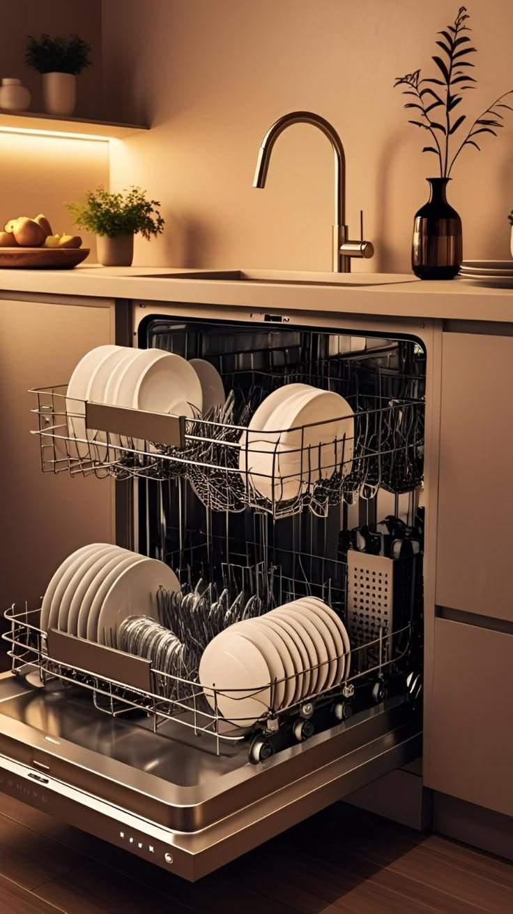

غسالة الأطباق من أكثر الأجهزة تأثرًا بالترسبات الجيرية وانسداد الفلاتر والخراطيم مع الاستخدام اليومي. يقدّم فنيو خدماتي خدمة فحص وإصلاح متكاملة لأعطال غسالات الأطباق، من التسريب والتصريف إلى التسخين ولوحة التحكم، مع شرح واضح للعطل قبل بدء العمل.

خدمات غسالات الأطباق
اختر المشكلة التي تواجهها لتقرأ التفاصيل.
عدم تصريف المياه
تبقى المياه في قاع الغسالة بعد الدورة؟ نكشف الانسداد ونصلح طلمبة التصريف.
التفاصيلتسريب المياه
مياه تحت الغسالة أو حول الباب؟ نحدد مصدر التسريب ونعالجه من الجذر.
التفاصيلالأطباق غير نظيفة
بقع وبقايا طعام بعد الغسيل؟ ننظّف الرشاشات ونعالج الترسبات ونعيد قوة الغسيل.
التفاصيلالتسخين والتجفيف
مياه باردة وأطباق مبتلة؟ نختبر عنصر التسخين والحساسات ونستبدل التالف.
التفاصيللا تعمل / لوحة التحكم
الجهاز لا يستجيب أو الأضواء تومض؟ نتتبع الدائرة ونحدد العطل الحقيقي.
التفاصيلصيانة دورية وتنظيف
فحص وتنظيف شامل للفلاتر والرشاشات والجوانات وإزالة الترسبات لإطالة عمر الجهاز.
التفاصيلهل تلاحظ شيئًا من هذا؟
- مياه متجمعة في قاع الغسالة بعد انتهاء الدورة
- بقع أو بقايا طعام على الأطباق بعد الغسيل
- تسرب مياه من أسفل الباب أو حوله
- أضواء تومض أو رمز خطأ على لوحة التحكم
- أطباق مبتلة بعد انتهاء دورة التجفيف
- الغسالة لا تبدأ الدورة عند التشغيل
كيف تحافظ على غسالات الأطباق
عادات بسيطة تطيل عمر جهازك وتقلل الأعطال.
نظّف الفلتر أسبوعيًا
الفلتر المتسخ سبب أول لضعف الغسيل وانسداد التصريف والروائح.
استخدم الملح والملمّع
خاصةً مع المياه العسرة، فهما يحميان الغسالة من الجير ويعطيان لمعانًا للأواني.
لا تُحمّل الغسالة فوق طاقتها
حتى يصل الرش لكل الأواني ولا يتعطل ذراع الرش.
أزل بقايا الطعام الكبيرة
لا حاجة لغسل الأطباق قبل التحميل، لكن أزل العظام والقشور.
شغّل دورة تنظيف شهريًا
دورة حرارة عالية بمنظّف مخصص تزيل الدهون والجير المتراكمين.
اتصل بالفني فورًا إذا لاحظت:
- تسرب مياه حول الغسالة
- رائحة حرق أو بلاستيك محترق
- رمز خطأ يتكرر بعد إعادة التشغيل
- الغسالة تفصل الكهرباء عند التشغيل
ماركات غسالات الأطباق التي نتعامل معها
- بوش
- سيمنز
- بيكو
- إل جي
- سامسونج
- أريستون
- زانوسي
- إلكترولوكس
- كاندي
- ويرلبول
- ميلي
- تيكا
أسماء الماركات ملك لأصحابها، وذكرها هنا للدلالة على أنواع الأجهزة التي نتعامل معها ولا يعني أننا وكلاء معتمدون لها.
أسئلة حول غسالات الأطباق
هل أستمر في استخدام الغسالة إذا كان بها تسريب بسيط؟
ننصح بإيقافها وإغلاق محبس المياه حتى يعاينها الفني، فالتسريب البسيط قد يتفاقم ويتلف أرضية المطبخ ويعرّض الدائرة الكهربائية للخطر.
هل يستحق إصلاح غسالتي القديمة؟
بعد الفحص نوضح لك العطل وتكلفة إصلاحه بصراحة، لتقرر الأنسب لك دون إلزام.
ما المعلومات التي أحتاجها عند الاتصال؟
اذكر نوع الجهاز وماركته وموديله إن أمكن، مع وصف مختصر للعطل وعنوانك، ليتجهّز الفني بما يلزم.
عندك عطل في جهازك؟ كلّمنا الآن
فنيونا جاهزون لتحديد موعد زيارة يناسبك. نستقبل اتصالاتك على مدار الساعة.